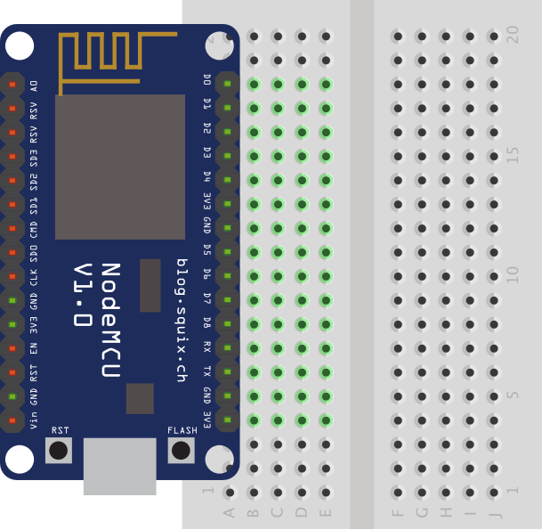
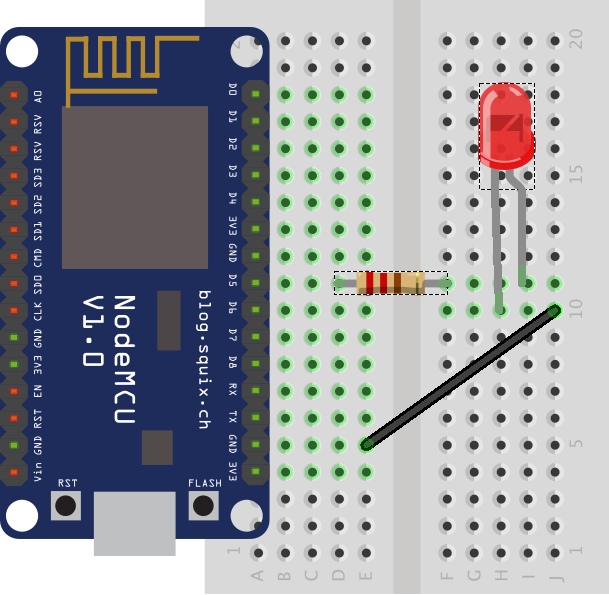

Tutorial 3: Proyecto Led
Objetivo:
El objetivo de este ejemplo es permitir un primer contacto con la placa NodeMCU, la protoboard y algunos componentes electrónicos.
Pasos a Seguir
- Desconecte el cable usb de la placa o del ordenador (con el objetivo de evitar cortocircuitos).
- Coloque la parte lateral donde aparecen más pines con el prefijo "D" conectada a la placa en la primera columna. Los demás pines quedarán en el aire como en la imagen. 
- Coloque una resistencia de 220 Ohmios (cualquiera del kit) que haga de puente en la fila donde se encuentre el pin D5 como en la imagen.
- Seleccione cualquier led del kit y conectarlo de la siguiente forma. El pin que es más largo (ánodo (+)) deberá ir conectado en la otra fila donde salte la resistencia y el pin más corto (cátodo (-)) en la fila superior o inferior. Por último conectar un cable con la fila seleccionada donde esté el pin más corto del led con cualquier fila que ponga la letra G de Ground (Tierra). El esquema debe quedar parecido a la imagen. 
- Conecte la placa al ordenador por el cable usb.
- Abra el entorno y copiar el siguiente código:
- Pulse el segundo botón del entorno para compilar y subir el código.
- Tras transferir el código podrá ver cómo parpadea el led cada dos segundos

void setup() {
// Este método se ejecuta una sola vez (Se ejecuta el primero de todos)
// La siguiente línea indica que la placa se comunicará a una velocidad de 9600 bits por segundo*
Serial.begin(9600);
// La siguiente línea indica que el pin D5 será de salida (devolverá 0v cuando la señal sea baja y 3.3V cuando la señal sea alta)
pinMode(D5,OUTPUT);
}
void loop() {
// Este método se ejecutará en bucle de manera infinita
// La siguiente línea enviar un mensaje desde la placa al ordenador
Serial.println("Enciendo el Led");
// Indica que se devuelva el nivel alto (3.3v) por el pin D5
digitalWrite(D5,HIGH);
// La siguiente línea indica cuantos milisegundos esperará o dormirá la placa (1000 milisegundos = 1 segundo)
delay(2000);
// La siguiente línea enviar un mensaje desde la placa al ordenador
Serial.println("Apaga el Led");
// Indica que se devuelva el nivel bajo (0v) por el pin D5
digitalWrite(D5,LOW);
// La siguiente línea indica cuantos milisegundos esperará o dormirá la placa (1000 milisegundos = 1 segundo)
delay(2000);
}
/* * En Internet en algunos tutoriales sobre Arduino y otras placas puede encontrase el término "bits por segundos"
* intercambiado por baudios. En este caso concreto son equivalente dado que en cada estado de la señal se envia
* un único bit pero no tiene porque ser así en todos los casos por lo tanto "bits por segundos" y baudios no
* siempre son equivalentes.
*/
Explicación del Código de este Ejemplo
Antes de cualquier método podemos ver una variable global (significa que cualquier función podrá hacer uso de ella) denominada sumaTotal. Esta variable será la encargada de llevar el recuento de las sumas.
La función Setup se encarga de indicar la velocidad a la que se comunciará la placa con el ordenador, dar el valor inicial a la variable sumaTotal el valor de 0 y hacer una pequeña espera para que la comunciación entre el ordenador y la placa se inicie (existen formas más elegante de hacer eso, pero el objetivo es el mínimo número de sentencias nuevas).
La función Loop muestra un mensaje solicitando un número, a continuación se inicia un bucle hará dormir/esperar a la placa hasta que reciba algo por el cable serial. Cuando se reciba un número las siguientes líneas lo guardarán en una varible de tipo numérica (int) y realizará la suma de la cantidad anterior más la nueva. Destacar que si lo que se recibe por serial no es un número la función Serial.parseInt() devolverá 0. Por último se muestra la suma total que lleva la placa.